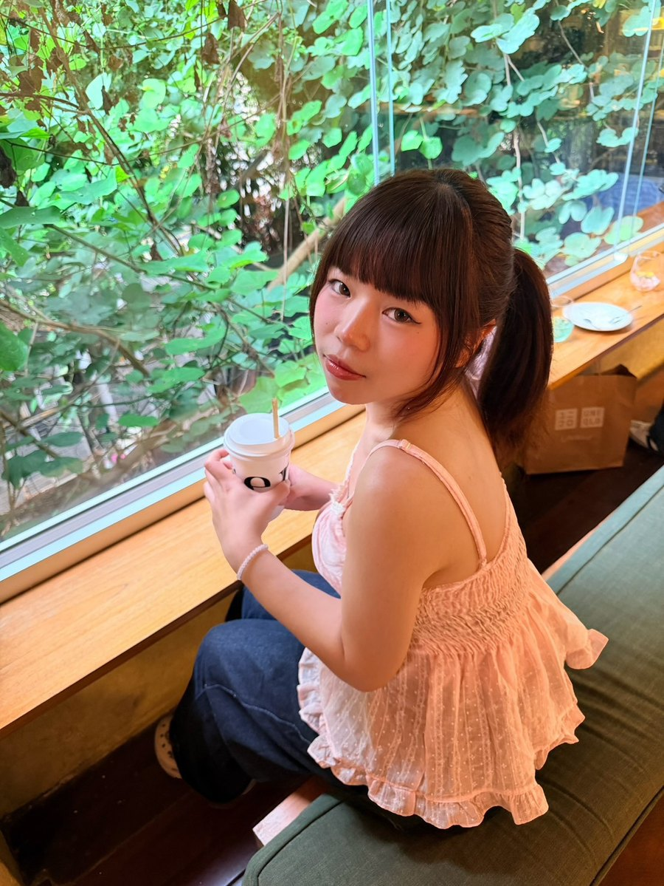

Web & Programming
HTMLCSSJavaScriptReact (Basic)Python
NICE TO MEET YOU ♡
ตัวตน ความสนใจ และสิ่งที่บีมอยากเรียนรู้ต่อไป

WHO I AM
บีมเป็นนักศึกษาชั้นปีที่ 3 สาขาเทคโนโลยีสารสนเทศ มหาวิทยาลัยอีสเทิร์นเอเชีย มีพื้นฐานการพัฒนาเว็บไซต์ การออกแบบ UX/UI และการวิเคราะห์ข้อมูล พร้อมทักษะการประยุกต์ใช้ AI และ Agentic Workflow เพื่อสนับสนุนการทำงานให้เร็วและเป็นระบบ
นอกจากการเรียน บีมมีประสบการณ์ทำงานด้านบริการและการขายกว่า 4 ปี รวมถึงรับงานรีวิวสินค้าและสร้างคอนเทนต์ ทำให้ได้ฝึกการสื่อสาร การจัดการเวลา ความรับผิดชอบ และเข้าใจผู้ใช้งานจริง
ตอนนี้กำลังมองหาโอกาสฝึกงานเพื่อเรียนรู้การทำงานจริง พัฒนาทักษะด้านเทคโนโลยี และค้นหาสายงานที่เหมาะกับตัวเองมากขึ้น
MY TOOLBOX
เครื่องมือและทักษะที่ใช้จริงในโปรเจกต์และงานของบีม
EDUCATION & LANGUAGES
ปริญญาตรี สาขาเทคโนโลยีสารสนเทศ · 2024 — Present (Year 3)
ภาษาที่ใช้สื่อสาร
I may not know everything yet, but I'm always willing to learn, try, and improve.
— Beam